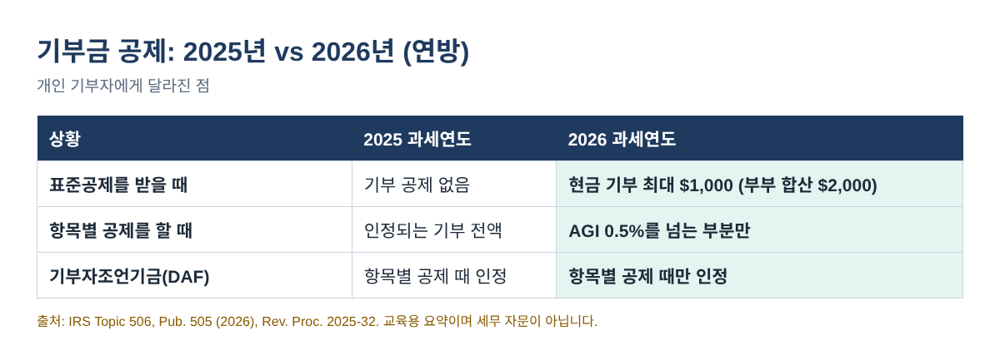
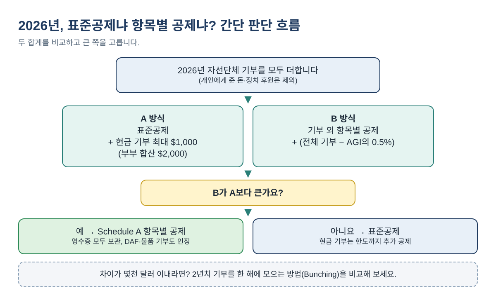
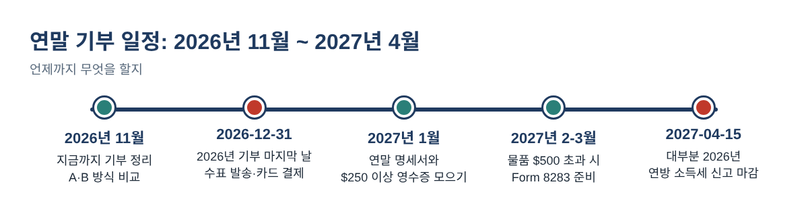

2026년 기부금 공제, 새 규칙으로 직접 계산하는 법: 표준공제 받아도 기부가 세금을 줄일까?
교회 헌금, 푸드뱅크, 아이 학교에 꾸준히 기부해 왔는데 세금에는 아무 변화가 없었던 분이 많습니다. 대부분 표준공제를 받기 때문입니다. 2026 과세연도부터는 이야기가 달라집니다. 항목별 공제를 하지 않아도 현금 기부 일부를 공제받을 수 있고, 반대로 항목별 공제를 하는 분은 새로 생긴 '0.5% 문턱' 때문에 공제액이 조금 줄어듭니다.
사업하시는 분들은 일 년 내내 사업 경비 공제를 챙기시지요. 개인 기부도 12월 31일 전에 5분만 계산해 보면 충분합니다. 이 글에서는 2026년 새 규칙, 종이나 엑셀로 바로 할 수 있는 두 가지 계산, 그리고 IRS가 요구하는 영수증을 차례로 정리합니다.
이런 분께 필요합니다: 자선단체·교회에 기부하는 개인과 자영업자 중, 연말 전에 2026년 기부가 연방 소득세를 얼마나 줄이는지 알고 싶은 분.
2026년에 무엇이 달라졌나
대부분의 기부자에게 중요한 규칙은 세 가지입니다. 아래 숫자는 모두 연방 기준이며 IRS 자료에서 확인했습니다(출처는 글 끝에 있습니다).
- 항목별 공제를 안 하는 분: 자격 있는 자선단체에 낸 현금·수표 기부를 최대 $1,000(부부 합산 신고는 $2,000)까지 표준공제에 더해 공제받습니다. 기부자조언기금(DAF)에 넣은 돈은 대체로 해당되지 않습니다.
- 항목별 공제를 하는 분: 기부금 중 AGI의 0.5%를 넘는 부분만 공제됩니다. AGI가 $150,000이면 처음 $750은 공제되지 않습니다.
- 초고소득: 과세소득이 $640,600(부부 합산 $768,700)을 넘으면 항목별 공제가 줄어들 수 있습니다. 이 글의 계산에는 넣지 않았습니다.

2026년 표준공제는 미혼과 부부 개별 신고 $16,100, 부부 합산 $32,200, 세대주 $24,150입니다. 65세 이상이거나 시각장애가 있으면 기혼자는 1인당 $1,650, 미혼자는 $2,050이 더해집니다.
단계별 계산: 내 기부가 세금을 줄일까?
두 가지 합계를 비교해서 큰 쪽을 공제로 쓰면 됩니다.
- 2026년 기부를 유형별로 더합니다. 자선단체에 낸 현금·수표·카드 기부, DAF 기부, 옷·가구 같은 물품 기부로 나눕니다. 개인에게 준 돈, 개인을 위한 크라우드펀딩, 정치 후원은 공제가 안 되니 뺍니다.
- 받은 혜택을 뺍니다. $300짜리 자선 행사 티켓에 $120 식사가 포함됐다면 기부는 $180입니다.
- A 방식(표준공제): 표준공제 + 현금 기부와 한도($1,000, 부부 합산 $2,000) 중 작은 금액. DAF·물품 기부는 여기 들어가지 않습니다.
- B 방식(항목별 공제): 기부 외 항목별 공제(주·지방세는 한도 $40,400까지, 모기지 이자 등) + 전체 기부 − AGI × 0.5%.
- 큰 쪽을 고릅니다. 기부 덕분에 늘어난 공제는 큰 쪽에서 '기부가 없을 때 받을 공제'를 뺀 금액입니다.

예시 세 가지 (예시 값)
| 예시 | A: 표준공제 | B: 항목별 공제 | 결과 |
|---|---|---|---|
| 가. 미혼, AGI $60,000, 기부 외 항목별 $6,000, 현금 기부 $1,500 | $16,100 + $1,000 = $17,100 | $6,000 + ($1,500 − $300) = $7,200 | 표준공제. 기부로 $1,000 증가 |
| 나. 부부 합산, AGI $180,000, 기부 외 항목별 $30,000, 현금 기부 $8,000 | $32,200 + $2,000 = $34,200 | $30,000 + ($8,000 − $900) = $37,100 | 항목별 공제. 기부로 $4,900 증가 |
| 다. 세대주, AGI $95,000, 기부 외 항목별 $12,000, 현금 $2,000 + DAF $1,000 | $24,150 + $1,000 = $25,150 | $12,000 + ($3,000 − $475) = $14,525 | 표준공제. DAF $1,000은 효과 없음 |
예시 값입니다. 늘어난 공제 = 큰 쪽 − (표준공제와 기부 외 항목별 공제 중 큰 금액).
예시 다를 눈여겨보세요. DAF에 넣은 $1,000은 항목별 공제를 할 때만 인정되므로 이 가정에는 2026년에 아무 효과가 없습니다. 같은 돈을 자선단체에 현금으로 바로 냈다면 $1,000 한도 안에서 공제됐을 것입니다.
엑셀·구글 시트에 직접 입력하는 수식
B1~B5 칸에 본인 숫자를 넣고 아래 수식을 입력하면 됩니다.
| 셀 | 내용 | 수식 |
|---|---|---|
| B1 | 신고 유형: single, joint, hoh | (직접 입력) |
| B2 · B3 | AGI · 기부 외 항목별 공제 | (직접 입력) |
| B4 · B5 | 현금 기부 · DAF와 물품 기부 | (직접 입력) |
| B6 | 표준공제 | =IF(B1="joint",32200,IF(B1="hoh",24150,16100)) |
| B7 | A 방식 | =B6+MIN(B4,IF(B1="joint",2000,1000)) |
| B8 | B 방식 | =B3+MAX(0,B4+B5-0.005*B2) |
| B9 | 결과 | =IF(B8>B7,"Itemize","Standard") |
부부 개별 신고는 미혼 금액을 씁니다. 배우자가 따로 신고하면서 항목별 공제를 하면 본인도 항목별 공제를 해야 한다는 점도 기억하세요.
차이가 작다면: 2년치를 한 해에 몰아서 기부하기
B 방식이 A 방식보다 조금 작다면, 2년치 기부를 한 해에 모으는 방법(Bunching)이 유리할 수 있습니다. 많이 낸 해에는 항목별 공제를, 쉬는 해에는 표준공제를 받는 방식입니다.
| 방법 (부부 합산, AGI $150,000, 기부 외 항목별 $28,000, 매년 $6,000) | 2026 | 2027 | 2년 합계 |
|---|---|---|---|
| 매년 $6,000씩 기부 | $34,200 | $34,200 | $68,400 |
| 2026년에 $12,000, 2027년 0 | $39,250 | $32,200 | $71,450 |
예시 값입니다. 2027년 금액이 2026년과 같다고 가정했습니다(2027년 금액은 아직 발표 전).
이 예시에서는 2년 동안 공제가 $3,050 늘어납니다. DAF에 몰아 넣고 몇 년에 걸쳐 단체에 나눠 줄 수도 있지만, DAF 기부는 항목별 공제를 하는 해에만 인정됩니다.
IRS가 요구하는 영수증과 기부 시점
- 모든 현금 기부: 은행·카드 기록, 또는 단체 이름·날짜·금액이 적힌 서면 기록을 보관합니다.
- 한 번에 $250 이상: 신고 전에 단체로부터 서면 확인서를 받아 두어야 합니다. 대가로 받은 것이 있는지도 적혀 있어야 합니다.
- 물품 기부 합계 $500 초과: Form 8283을 제출합니다. 한 품목(또는 비슷한 물품 묶음)이 $5,000을 넘으면 자격 있는 감정평가가 필요합니다.
- 시점: 수표는 부친 날, 신용카드는 결제한 날 기부한 것으로 봅니다. 카드 대금을 1월에 내도 2026년 기부입니다.

자주 하는 실수
- 이웃이나 친척을 돕는 크라우드펀딩을 기부금으로 넣는 경우. 개인에게 준 돈은 공제되지 않습니다.
- 자선 만찬·행사 티켓 금액 전체를 공제하는 경우. 받은 식사·혜택의 가치를 빼야 합니다.
- DAF 기부가 새 $1,000/$2,000 공제에 들어간다고 생각하는 경우.
- 항목별 공제가 유리한지 볼 때 0.5% 문턱을 빼먹는 경우.
- $250 이상 확인서를 받지 않은 채 신고하는 경우.
- 1월 2일에 수표를 부치고 2026년 기부로 넣는 경우.
자주 묻는 질문
표준공제를 받아도 영수증이 필요한가요?
네. 표준공제를 받는 분의 기부 공제도 기부금 공제이므로 같은 기록 규칙이 적용됩니다. 모든 현금 기부는 은행 기록이나 서면 기록, 한 번에 $250 이상은 서면 확인서가 필요합니다.
옷이나 살림살이를 기부해도 표준공제에 더해지나요?
아니요. 새 공제는 현금이나 수표로 낸 기부가 대상입니다. 물품 기부는 항목별 공제를 할 때만 도움이 됩니다.
0.5%는 무엇을 기준으로 하나요?
AGI(조정총소득)입니다. IRS Publication 505(2026)는 항목별 공제 시 AGI의 0.5%를 넘는 기부금만 공제된다고 설명합니다. AGI × 0.005를 전체 기부에서 빼면 됩니다.
부부 합산 신고면 한 사람당 $1,000인가요?
아니요. 부부 합산 신고서 하나에 $2,000이 한도입니다.
한눈에 보는 체크리스트
- ☐ 2026년 기부를 날짜·단체·유형·금액으로 정리
- ☐ 행사 식사·티켓 등 받은 혜택 금액 빼기
- ☐ A 방식과 B 방식을 계산해 큰 쪽 선택
- ☐ 차이가 작으면 2년 몰아서 기부 비교
- ☐ 2026년 12월 31일까지 기부 (수표 발송·카드 결제)
- ☐ 신고 전 $250 이상 확인서 받기, 물품 $500 초과 시 Form 8283
위 과정을 그대로 해 주는 기부금 공제 플래너 2026은(는) 아래 무료 키트 다운로드에서 가입 없이 무료로 받으실 수 있습니다(엑셀 + PDF 가이드).
이 글은 교육용 정보이며 세무·법률·재정 자문이 아닙니다. 규정은 바뀔 수 있으니 최종 2026년 IRS 서식과 안내서를 확인하시거나, 개인 상황은 세무 전문가와 상의하세요.
무료 키트 다운로드
글에서 설명한 내용을 그대로 따라 할 수 있는 도구입니다. 가입 없이 바로 받으세요.
- Excel 계산 도구 (.xlsx)Charitable_Donation_Deduction_Planner_2026_EN_KR.xlsx · 36 KB
- 단계별 가이드 (PDF)Charitable_Giving_Deduction_Guide_2026_EN_KR.pdf · 336 KB
본인과 본인 사업에 무료로 쓰세요. 재판매·재배포는 하지 마세요. 일반 정보이며 세무·법률·회계 자문이 아닙니다. 숫자는 본인 자료로 꼭 확인하세요.
출처
- IRS Topic No. 506, Charitable contributions
- IRS Publication 505 (2026), Tax Withholding and Estimated Tax
- IRS Publication 526, Charitable Contributions
- IRS Publication 6196, Charitable Contribution Deduction Tips for Non-Itemizers
- IRS Rev. Proc. 2025-32 (Internal Revenue Bulletin 2025-45)
- IRS Tips for tracking charitable donations
- IRS When to file